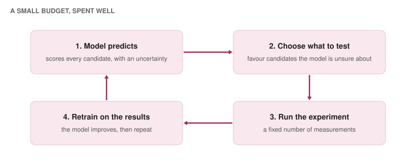
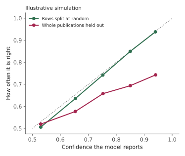
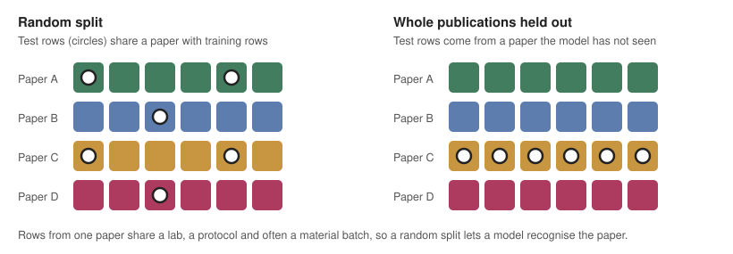
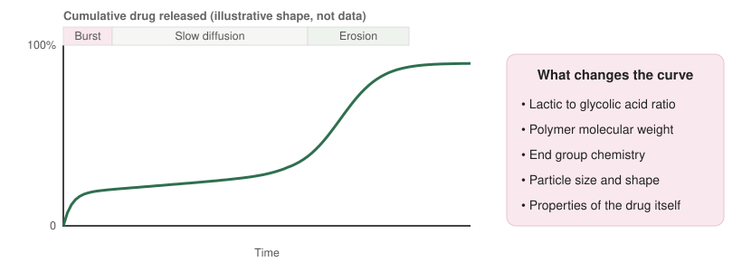
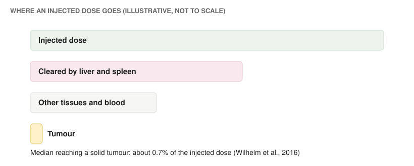

Can machine learning decide which molecule to make next?
Finding a drug means searching an enormous space of molecules with a small experimental budget, and most candidates fail somewhere between the first test tube and the clinic. Machine learning earns its place when it points the budget in the right direction and is honest about what it does not know. This post follows the field from molecules to proteins to delivery, which are the three places my own work touches it, and spends most of its time on one theme: how a model is evaluated decides whether its predictions can be trusted.
1. The shape of the problem
Drug discovery moves through stages: choosing a biological target, finding molecules that act on it (hits), improving them (leads), testing safety and delivery before human trials, and then clinical trials. Every stage is a filter, and every experiment in it costs time and money. A model is useful if it lets a team make better choices about which experiment to run next, or if it removes experiments that would have failed.

2. Representing molecules
A model has to see a molecule as numbers. The long-standing approach is the fingerprint: Rogers and Hahn’s extended-connectivity fingerprints (2010) encode which small substructures are present around each atom into a fixed-length vector. A molecule is also naturally a graph of atoms and bonds, and Justin Gilmer and colleagues framed neural message passing on such graphs for chemistry in 2017. Kevin Yang and colleagues, including Regina Barzilay at MIT, turned this into the widely used Chemprop models for property prediction.
Models can also generate molecules instead of only scoring them. Rafael Gómez-Bombarelli and colleagues (2018) learned a continuous representation of molecules that can be searched, and Wengong Jin, Barzilay and Tommi Jaakkola’s junction tree variational autoencoder built molecular graphs piece by piece so that every output is chemically valid.
The data have their own traps, which Section 5 returns to. The MoleculeNet benchmark (Zhenqin Wu and colleagues, 2018) helped standardise comparisons and popularised splitting data by molecular scaffold, the core ring structure described by Bemis and Murcko in 1996, so that test molecules are chemically different from training molecules instead of near-duplicates.
3. A model that found an antibiotic
The best-known payoff is halicin. Jonathan Stokes and colleagues, with Barzilay and James Collins as senior authors, trained a model on measured growth inhibition of E. coli and used it to search a very large library of molecules for new antibiotic candidates. Halicin, a compound originally studied for another purpose, was one of the results. The same collaboration later reported a structural class of antibiotics found with explainable deep learning (Felix Wong and colleagues, 2024). These are examples of the loop in Figure 1 working: a model proposed what to test, and laboratory experiments confirmed it.
4. Proteins and the cost of every experiment
For protein targets, John Jumper and colleagues’ AlphaFold (2021) changed what can be predicted from sequence, and AlphaFold 3 (Josh Abramson and colleagues, 2024) extended the idea to complexes of proteins with other molecules. Protein language models such as Alexander Rives and colleagues’ ESM (2021), which learn from hundreds of millions of sequences without labels, provide representations that are useful for many tasks. Gabriele Corso, Barzilay and colleagues’ DiffDock (2023) applied diffusion models to predicting how a small molecule docks to a protein.
A different question is what a mutation does to a protein. Jonathan Frazer, Debora Marks and colleagues built EVE to predict the effect of variants from evolutionary data, Pascal Notin and colleagues built Tranception, a protein language model for fitness prediction, and assembled ProteinGym, a large benchmark for comparing such predictors against measured experiments.
My work with Prof. Debora Marks’s lab at Harvard sits in this area. I compare general-purpose language models with specialist variant predictors on shared sets of candidates, and I ask whether the confidence they report can be trusted when the test gets harder: unseen variants within a protein, held-out proteins and families, and different experimental assays.
5. Honest uncertainty
A prediction is only as useful as the model’s sense of when it might be wrong. Chuan Guo and colleagues showed in 2017 that modern neural networks are often overconfident: when they say they are 90% sure, they are right less often than that. A reliability diagram plots stated confidence against actual accuracy, and a calibrated model lies on the diagonal.

Two families of methods address this. One adds uncertainty estimates to the model and checks them, as in the calibration checks I run on public mutation-effect datasets: are low-confidence predictions really less accurate, and does rejecting them improve accuracy on what remains? The other, conformal prediction (Vladimir Vovk and colleagues, summarised accessibly by Anastasios Angelopoulos and Stephen Bates in 2021), wraps any model in a procedure that produces prediction sets with a guaranteed coverage rate, so long as the new data resemble the calibration data. That last condition is the catch, and it leads to the next section.
Uncertainty is also what makes experiment selection work. Philip Romero, Andreas Krause and Frances Arnold used Gaussian processes in 2013 to decide which protein variants to test next, choosing those that were either promising or poorly understood. In a related experiment of mine, I simulate selection with hidden labels under a fixed budget of 20 measurements, and test whether an uncertainty-based rule picks more informative variants than random choice.
6. Why the split matters
Machine learning needs a test set that stands in for the future. With chemistry and biology data, the usual random split often fails at this. A dataset assembled from the literature is a patchwork of papers. Rows from one paper share a laboratory, a protocol, a measurement method and often a batch of material. If a random split puts some of those rows in training and others in testing, the model can score well by recognising the paper. The score then says little about how it will do on a new paper’s data.

The fix is to split by source, holding out whole publications (or scaffolds, proteins or assays, depending on the question), which is a harder test and a better predictor of real performance. The same reasoning applies to uncertainty: a model’s confidence should be checked on held-out sources, because that is where overconfidence appears, as Figure 2 illustrates.
7. A good drug still has to arrive
A molecule that works in a dish can fail because it never reaches its target. Robert Langer, at MIT, and Judah Folkman showed in 1976 that polymers could release large molecules slowly over time, an idea that grew into controlled-release drug delivery. PLGA, a biodegradable polymer made from lactic and glycolic acid, became one of the most widely used materials for this. It breaks down in the body by hydrolysis of its ester bonds into lactic and glycolic acid, and the drug leaves as the particle swells, erodes and degrades.
Release from PLGA is often described in phases: an early burst from drug near the surface, a slow phase dominated by diffusion, and a later phase as the polymer erodes. How quickly this happens depends on the ratio of lactic to glycolic acid, the polymer’s molecular weight, its end groups, the particle’s size and shape, and the drug itself. That is a long list of interacting factors, which is why release is hard to predict from first principles and why it is a natural target for machine learning.

Nathan Bannigan, Alán Aspuru-Guzik, Christine Allen and colleagues trained models to predict drug release from polymeric long-acting injectables, so that formulations can be screened computationally before being made. My own preprint in this area, Publication-block calibration reveals wide uncertainty in PLGA release endpoint prediction, mentored by Prof. Prateek Kumar Jha, concerns exactly the question of Section 6. As I understand the point in its title, a dataset of release measurements is assembled from many papers, so uncertainty should be measured by holding out whole publications rather than random rows, which exposes how wide the uncertainty on a new paper’s result really is.
8. From the injection to the tumour
For cancer drugs, nanoparticles are meant to carry a dose to a tumour and spare healthy tissue. The idea has a long history: Yasuhiro Matsumura and Hiroshi Maeda described the enhanced permeability and retention (EPR) effect in 1986, in which leaky tumour blood vessels let particles in and poor drainage keeps them there. In practice the numbers are sobering. Stefan Wilhelm and colleagues analysed published studies and found that a median of about 0.7% of an injected nanoparticle dose reaches a solid tumour, with much of the rest taken up by organs such as the liver and spleen, where specialised immune cells clear particles from the blood. A later study by Shrey Sindhwani and colleagues reported that a large share of nanoparticles enter tumours through an active process through endothelial cells, rather than passing through gaps between them, which shows how much of the mechanism is still being revised.

This is the background to my other preprint, Tumour accumulation is not tumour-to-liver selectivity: a publication-aware polymer nanoparticle reanalysis, mentored by Prof. Rinti Banerjee. A particle can reach a tumour in large amounts and still reach the liver in larger ones, so the amount that reaches the tumour and the ratio of tumour to liver are different measures, and a design that is good on one can be poor on the other. A reanalysis that is also publication-aware brings in the point of Section 6: results from different papers should not be pooled as if they came from one experiment.
9. What good evaluation looks like
- Split by source. Hold out whole publications, scaffolds, proteins or assays, whichever matches how the model will be used.
- Report uncertainty. Show calibration on held-out sources, not just accuracy.
- Compare with simple baselines. A fingerprint model or a general language model is a fair reference for any specialist.
- Measure the right quantity. Accumulation, selectivity and release at a given time are different endpoints. Use the one the decision depends on.
- Check the decision, not only the score. Ask whether the model’s ranking would have picked better experiments than chance within the real budget.
What is still hard
- Small, uneven data. Experimental datasets are assembled from many labs and protocols, so random splits can flatter a model.
- Delivery, not only activity. Predicting binding is further along than predicting where a drug goes in the body.
- Mechanism. Even a well-established idea such as EPR is still being revised, so models trained on correlations inherit that uncertainty.
- Closing the loop. The value comes from the cycle of prediction, experiment and retraining, which needs the laboratory and the model to work together.
Further reading
- Rogers, D. and Hahn, M. (2010). Extended-connectivity fingerprints. Journal of Chemical Information and Modeling.
- Gilmer, J. et al. (2017). Neural message passing for quantum chemistry. ICML.
- Yang, K. et al. (2019). Analyzing learned molecular representations for property prediction. Journal of Chemical Information and Modeling.
- Gómez-Bombarelli, R. et al. (2018). Automatic chemical design using a data-driven continuous representation of molecules. ACS Central Science.
- Jin, W., Barzilay, R. and Jaakkola, T. (2018). Junction tree variational autoencoder for molecular graph generation. ICML.
- Wu, Z. et al. (2018). MoleculeNet: a benchmark for molecular machine learning. Chemical Science.
- Bemis, G. W. and Murcko, M. A. (1996). The properties of known drugs. 1. Molecular frameworks. Journal of Medicinal Chemistry.
- Stokes, J. M. et al. (2020). A deep learning approach to antibiotic discovery. Cell.
- Wong, F. et al. (2024). Discovery of a structural class of antibiotics with explainable deep learning. Nature.
- Jumper, J. et al. (2021). Highly accurate protein structure prediction with AlphaFold. Nature.
- Abramson, J. et al. (2024). Accurate structure prediction of biomolecular interactions with AlphaFold 3. Nature.
- Rives, A. et al. (2021). Biological structure and function emerge from scaling unsupervised learning to 250 million protein sequences. PNAS.
- Corso, G. et al. (2023). DiffDock: diffusion steps, twists, and turns for molecular docking. ICLR.
- Frazer, J. et al. (2021). Disease variant prediction with deep generative models of evolutionary data. Nature.
- Notin, P. et al. (2022). Tranception: protein fitness prediction with autoregressive transformers and inference-time retrieval. ICML.
- Notin, P. et al. (2023). ProteinGym: large-scale benchmarks for protein fitness prediction and design. NeurIPS.
- Romero, P. A., Krause, A. and Arnold, F. H. (2013). Navigating the protein fitness landscape with Gaussian processes. PNAS.
- Guo, C. et al. (2017). On calibration of modern neural networks. ICML.
- Angelopoulos, A. N. and Bates, S. (2021). A gentle introduction to conformal prediction and distribution-free uncertainty quantification. arXiv.
- Langer, R. and Folkman, J. (1976). Polymers for the sustained release of proteins and other macromolecules. Nature.
- Bannigan, P. et al. (2023). Machine learning models to accelerate the design of polymeric long-acting injectables. Nature Communications.
- Matsumura, Y. and Maeda, H. (1986). A new concept for macromolecular therapeutics in cancer chemotherapy. Cancer Research.
- Wilhelm, S. et al. (2016). Analysis of nanoparticle delivery to tumours. Nature Reviews Materials.
- Sindhwani, S. et al. (2020). The entry of nanoparticles into solid tumours. Nature Materials.
Appendix: credits
- Figures 1, 3, 4 and 5 are my own schematic diagrams. Figure 2 is a simulation I wrote to illustrate overconfidence under distribution shift, and uses made-up data. None of the figures are data from the cited studies.